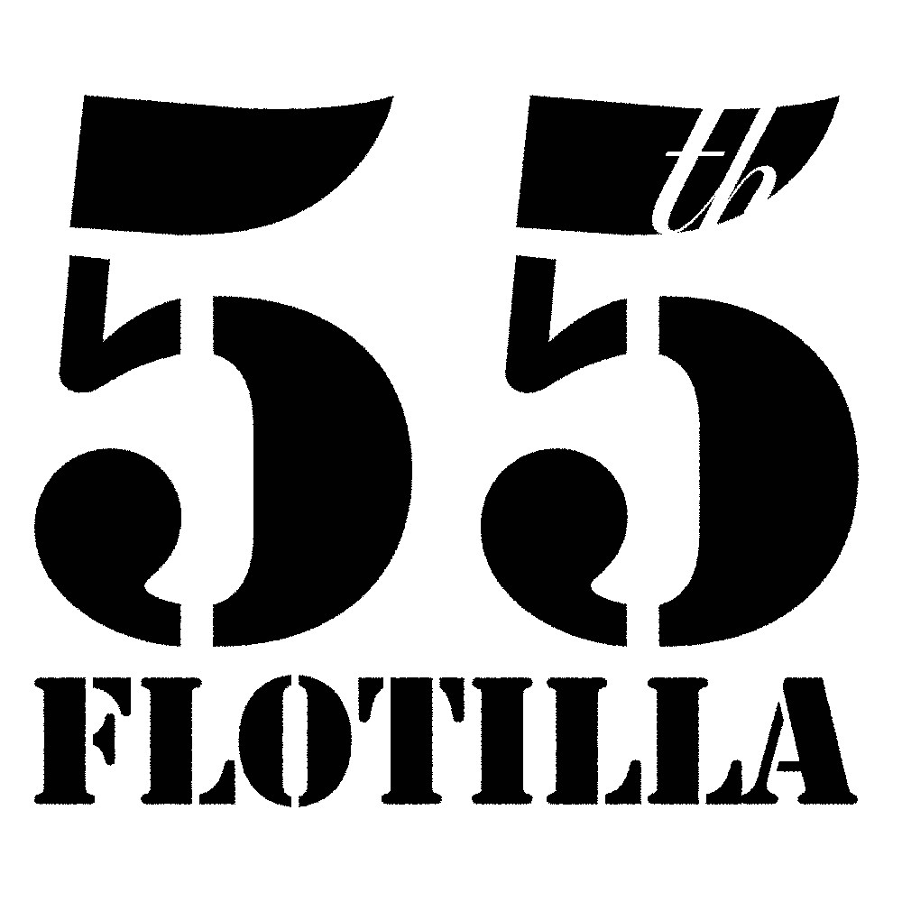

Bandcamp
SoundCloud
Find us on Facebook
Instagram
Listen on Amazon Music
Listen on Apple Music
YouTube
Listen on YouTube Music
Discogs
Last.fm
The 55th Flotilla
Brothers Toby and Jake Cole craft bass-heavy techno, drum and bass, and breakbeat. They've played Boomtown, Bangface, Balter and other festivals that don't start with a b
Listen on SpotifyBandcamp
SoundCloud
Find us on Facebook
Listen on Amazon Music
Listen on Apple Music
YouTube
Listen on YouTube Music
Discogs
Last.fm